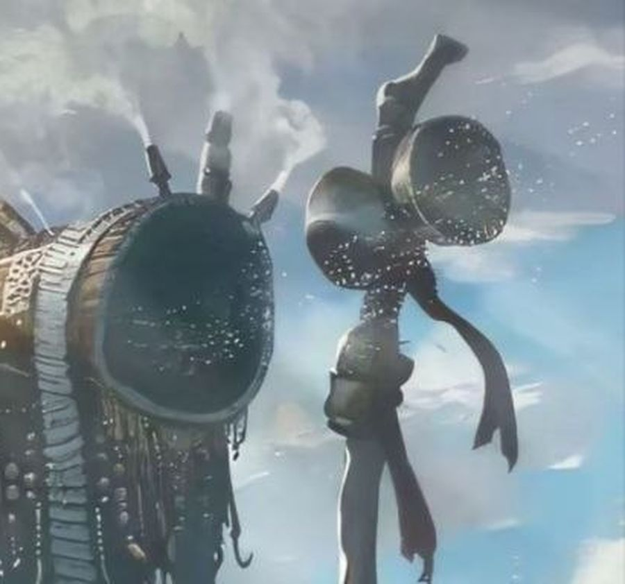
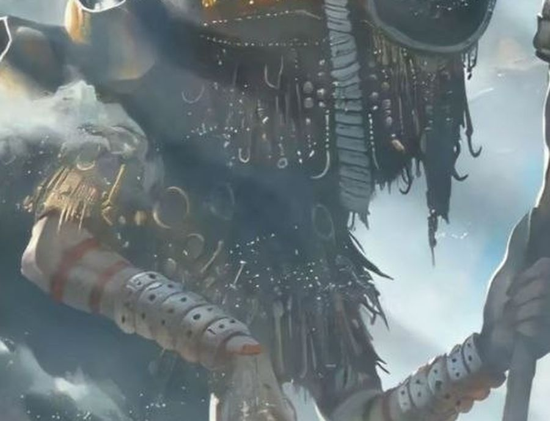

Relik 01
Tongkat Gong Kembar
Dua cakram kuningan tergantung pada galah kayu setinggi menara. Asap dupa mengepul dari pasak-pasaknya. Ketika angin gunung menabuhnya, lembah tahu: Penjaga sedang berpindah.
Catatan tebing
Ia berjalan di atas lautan awan. Kami berdiri di bawahnya, dan langit tidak lagi terasa jauh.
Dua orang melihatnya dari tebing
Para tetua bilang gunung itu tidak pernah diam. Ia hanya berjalan sangat pelan, seabad selangkah, dan kabut adalah napasnya.
Kami tidak memujanya karena takut. Kami memujanya karena ia selalu berjalan membelakangi matahari, menahan cahaya agar lembah ini tetap sejuk dan hijau.
Setiap benda di tubuhnya adalah pusaka. Tidak ada yang hiasan belaka.

Dua cakram kuningan tergantung pada galah kayu setinggi menara. Asap dupa mengepul dari pasak-pasaknya. Ketika angin gunung menabuhnya, lembah tahu: Penjaga sedang berpindah.

Manik, kail, dan rumbai kuningan bergelantungan di dadanya. Satu untai ditambahkan setiap musim. Kini jumlahnya lebih banyak dari pohon di lembah, dan gemerisiknya terdengar seperti hujan yang belum jadi turun.
Jari-jarinya panjang, berkuku merah gelap, turun dari kabut hanya untuk merapikan pucuk-pucuk pohon yang patah. Tidak pernah lebih dari itu. Belum pernah lebih dari itu.
Empat tahap menuju tebing penglihatan. Tidak boleh diubah urutannya.
Tempat awan menyentuh tanah. Peziarah melepas alas kaki, karena kabut di sini dianggap napas sang Penjaga yang sedang tidur.
Lumut tebal menelan langkah dan suara. Di sinilah rombongan mulai berbisik, bukan karena aturan, tapi karena hutan membuatmu begitu.
Dinding batu yang digenggam akar. Setiap peziarah menitipkan satu untai benang pada akar, menirukan untaian di dada sang Penjaga.
Satu lentera vermilion dinyalakan. Kalau malam itu kabut bergerak, doanya sudah sampai.
Tidak ada formulir. Tidak ada daftar tamu. Hanya satu lentera, dan kabut yang mungkin menjawab.